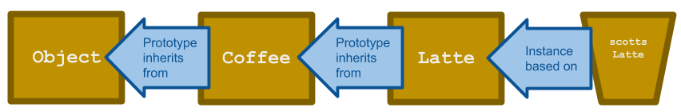

JavaScript objects inherit features from one another using Prototypes. Each and every object features a prototype object that functions as a template from which it inherits methods and properties. Such objects may also contain their own prototype objects from which they also inherit various methods and properties…and so on. This chain of inheritance is called the prototype chain.
